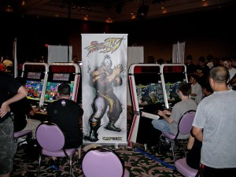
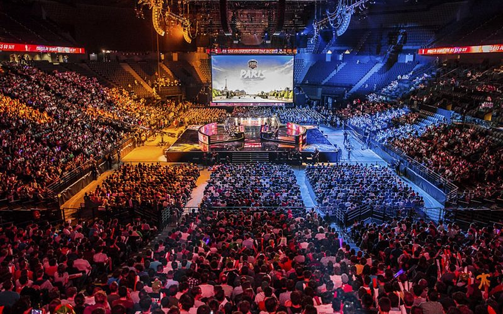
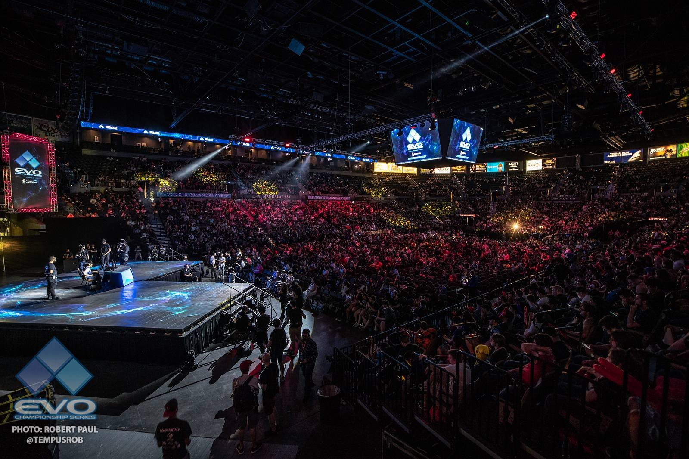

Développement de l'E-Sport
L’E-sport anagramme d'electronic sports est le domaine qui réunit tout ce qui a un rapport avec les compétitions de jeux vidéo. Les joueurs ou les équipes s’affrontent sur leurs jeux de prédilection, afin de s’adjuger les récompenses promises aux gagnants. Au fil des années, les compétitions se sont multipliées, et, à l’instar des sports professionnels, des championnats ont été créent. Les plateformes de diffusions telles que Youtube et Twitch ont participé à l’évolution de l’industrie et les investisseurs ont suivi le mouvement au début des années 2010.
L'évolution de l'E-sport
Début de l'E-sport
Au début des années 2000 comme dit plus tôt, l'E-sport commença alors à se développer petit à petit, commençant à avoir des salles plus grandes pour les tournois et de plus en plus de joueurs qui souhaitaient y participer pour se divertir ou devenir plus fort dans leur jeux de prédilection.
Âge d'or de l'E-sport
Dans les années 2010, le très renommé et populaire évènement nommé EVO (Evolution Championship Series) qui avait été crée en 2002 devint alors l'un des évènements les plus popularisés. Grâce aux plateformes Youtube et particulièrement Twitch crée en 2011 qui a l'ambition de diffuser les compétitions au départ. Grâce à cela, la décennie a connu un grand nombre de succès des évènements apportant de nouveaux joueurs et différents jeux devinrent très vite des jeux à succès comme : Leagues of Legends, Fortnite, Rocket League, Counter Strike ou les jeux FIFA. Les salles devinrent extrêmement grandes grâces aux partenariats et aux différentes marques déposants des actions.
Aujourd'hui
En 2020, l’épidémie de Coronavirus, a légèrement entravé l’évolution de l’E-sport, même si la majorité des tournois initialement prévus ont été joués en ligne. On peut noter la belle entrée dans le top des jeux les plus compétitifs de Call of Duty, notamment grâce à sa nouvelle compétition phare : la Call of Duty League Championship. En fin d’année 2020, la majorité des tournois majeurs des plus gros jeux cités ont été maintenus. La World Cup 2020 de Fortnite a été annulée. En 2021, les tournois ont repris petit à petit jusqu'à qu'aujourd'hui, la plupart des tournois prévus ont été maintenus et se sont déroulés. Pour l'instant, les États-Unis ont ré-ouvert les frontières pour des cas spéciaux, mais nous ne savons pas si la situation actuelle fera qu'en 2022 pour certains tournois comme le Gensis 8 les frontières vont se refermer et si les joueurs d'autres pays pourront y aller pour participer.
Les Partenariats dans l'E-sport
Depuis plusieurs années l'E-sport est devenu désormais dépendant du sponsoring pour les équipes d'E-sport et pour les organisations de tournois. En effet, sans eux l'évolution de cette pratique n'aurait pas été aussi rapide ni extrêmement popularisé. De plus, bien que l’accroissement des revenus du secteur est élevé, il est important de préciser que la viabilité économique de l’E-sport est dût, aujourd’hui, en immense partie aux sommes insufflées par des acteurs extérieurs eux-mêmes issus d’autres industries que celle du jeu vidéo. De plus, de la part du co-fondateur et directeur général de BMS CREW une équipe e-sport, il a annoncé que : "Au-delà de la dimension financière, la signature d’un sponsor apporte surtout de la crédibilité pour la structure E-sport. Elle traduit une volonté de faire confiance et surtout de confier une partie de sa communication numérique à une entité externe et on peut tout à fait comprendre que certains annonceurs soient frileux à ce sujet. Avec mon associé Joël Digbeu, pseudonyme étant "JoelPostbad" nous avons à prouver quelques difficultés à convaincre les marques pour notre lancement en essuyant des refus et très souvent pour le même motif : l’absence de références et de données." En effet, le sponsoring par les marques ne se fait pas en une poignée de mains, il faut du bénéfice pour les marques qui paieront beaucoup de choses pour l'équipe E-sport comme les maillots fabriqués, les apports financiers aux joueurs également les voyages dans d'autres régions en fonction du niveau des joueurs et d'autres apports très important.
Les coulisses de l'E-sport
Il y a beaucoup de points positifs dans l'E-sport, mais également des points négatifs et nous allons en parler dans ce troisième article. Nous possédons un nombre très élevé de joueur du sexe masculin que du sexe féminin. Dans des jeux en équipes comme Call of duty ou Leagues of Legends, il n'y a jamais de joueurs du sexe féminin, cela est souvent dû au problème de la mixité depuis la tendre enfance. Dans les pubs par exemple et ce dans tous les pays, les garçons jouent aux jeux vidéos et les filles sont souvent montrées avec des jouets ou des jeux de "filles". Cela pose parfois problème dans les compétitions cet écart, depuis le début de l'E-sport, il est rare de voir s'affronter des joueurs de sexe différent, mais quand cela arrive dans des jeux où le sexe importe peu à la base comme le jeu compétitif nommé Super Smash bros, Cela crée parfois du drame qui amplifie le problème majeur de la mixité dont nous allons en traiter un exemple par la suite.
En début 2019, dans le jeu Super smash bros Ultimate, la 5e version du jeu sur la console Nintendo Switch une jeune joueuse âgée de 15 ans au pseudonyme de Boochi fut victime de cyber-harcèlement après sa victoire contre un joueur professionnel au pseudonyme de Ally. En effet, dans le tournoi nommé AON Ultimate, la joueuse joue un personnage très peu connue et dit comme l'un des pires personnages de ce jeu. Dans ce jeu et dans la plupart des tournois, un set équivaut à trois manches dont le premier à deux manches gagnantes remporte le set et passe au tour suivant. Et le perdant passe alors dans la seconde partie du tournois, la route des perdants de la route des gagnants, cela équivaut comme à une deuxième chance, là où il n'y a pas ce système dans les tournois sportifs comme le football ou le basketball. La première manche de la joueuse fut une défaite pour elle contre le joueur professionnel. Les deux manches suivantes, fut par la suite une victoire pour elle et devint alors "La joueuse qui a vaincu le meilleur joueur du jeu à ce moment-là". Sa victoire est un souffle nouveau dans la communauté. Rarissimes sont les joueuses qui ont pu épater autant la scène et la nouvelle s'est rapidement répandue sur les réseaux sociaux. Spectateurs, joueurs amateurs comme professionnels et créateurs de contenu ont salué la performance de Bocchi.
Cette couverture et influence ont fait exploser le compteur de followers de Bocchi, ce qui a eu pour cause d'agacer certaines personnes. Elles l'ont fait savoir, la défaite du joueur professionnel ont donné un goût amer à ses fans qui ont fait partit de l'harcèlement de la jeune joueuse. La joueuse a reçu énormément d'harcèlements et des propos sexistes comme : "Ally a perdu contre une fille ? wtf lmao" ou également "les femmes ne devraient pas jouer à des jeux car elles sont trop faibles" ou encore "Elle a sûrement du supplier Ally de la laisser gagner puisque c'est une fille." Pour eux, la victoire de la joueuse de Marie n'est pas si importante que ça. Elle n'a pas valu l'élimination d'Ally, puisqu'il avait encore une seconde chance dans la route des perdants et elle s'est réalisée lors d'un set en 2 manches gagnantes, ce qui favorise ce genre de surprise contrairement en final avec un set en 3 manches gagnantes. Une vague de soutien s'est alors élevée pour persuader Bocchi de rester. La communauté a prouvé qu'elle n'est pas toxique et agressive dans son ensemble. Il y a eu énorméments de messages de soutien venant d'anonyme comme d'influenceurs mettant en avant l'importance d'une joueuse dans une communauté avec une majorité d'homme.
Une situation qui se termine bien, mais qui témoigne une fois de plus la difficulté pour la communauté des jeux vidéos de réguler la toxicité de certains membres et de gérer des situations délicates. Notamment du sexisme dans les jeux et l'écart entre les personnes de sexe féminin contrairement aux personnes de sexe féminin.
La triche dans l'E-sport ?

La triche dans l'E-sport a toujours été interdit bien évidemment, lorsqu'il y a de l'argent en jeu, tout soupçon de triche peut valoir à une élimination et une interdiction de tournois pendant un moment. Mais la triche n'équivaut pas comme dans les sports classiques uniquement au dopage, mais également aux logiciels, au programme ou d'autres aspects plus subtil. En effet, en reprenant toujours les jeux les plus populaires comme Counter-Strike, l'emplacement des adversaires est l'un des outils les plus importants du jeu en plus d'y connaître certains aspects. En avril 2018, un joueur indien du pseudonyme Forsaken de l'équipe nommée Optic India a été découvert en train de tricher par un joueur de son équipe. Le joueur avait installé un logiciel de triche qui lui permettait de viser automatiquement la tête des joueurs de l'équipe adverse dans le jeu et également découvrir leur position. Le joueur a donc été banni pour une durée de cinq ans des compétitions entraînant avec lui dans sa chute, ses coéquipiers et toute la scène de son pays. Forsaken avait essayé désespérément de désinstaller le logiciel lorsqu'il a été pris en flagrant délit en vain. Après une enquête, on a découvert que Forsaken a également triché dans une autre compétition nommée : "ESL India Premiership 2018 Fall."
Nous allons désormais parler de la triche la plus complexe dans l'E-sport qui est tout aussi proche qu'au dopage des sports classiques avec quelques faits plus difficile, l'adderall. L'adderall est un médicament qui stimule le système nerveux central. Ce médicament est prescrit pour les personnes ayant un trouble du déficit de l'attention avec ou sans hyperactivité ou de narcolepsie. Si on en parle ici, c'est que ce médicament n'est pas utilisé uniquement pour cela. En effet, l'adderall est malheureusement très populaire dans l'E-sport et énormément de joueurs l'utilisent comme dans le jeu Call of Duty. En effet, l'ancien joueur pro Adam Sloss sous le pseudonyme de KiLLa affirme que toutes les personnes dans cette compétition utilise l'adderall. Dans ce jeu, la concentration est primordiale et l'adderall comme d'autres dopages accroissent la concentration, le temps de réaction et les prises de décisions rendant ces joueurs bien plus supérieurs que ceux qui ne le prennent pas. L'adderall est venu petit à petit et les joueurs en prenaient au départ qu'une seule pilule dans de très gros tournois, mais comme tout médicament et toute triche lorsqu'on y goûte une fois il est difficile de ne pas en reprendre. Dans l'E-sport Call of Duty, toutes les personnes qui ont juré de ne jamais en prendre en prenne malheureusement pour rester à la hauteur et au même niveau que les adversaires qui en prennent pour gagner. Il n'y a pas que la scène E-sport de Call of Duty, mais également Counter-Strike ou encore Leagues of Legends. L'adderall est très facile d'accès aux États-Unis puisqu'il faut seulement la prescription d'un médecin pour l'acquérir et il y a également eu de l'adderall en France par des joueurs étrangers venant en France pour un tournoi avec parfois une valise entière d'adderall se faisant alors un business avec en le revendant à des joueurs français professionnel ou qui souhaitent le devenir.
L'adderall est interdit en France à cause des effets secondaires très dangereux. Ce médicament peut entraîner de l'insomnie ou de la difficulté à s'endormir, il peut causer des nausées ou des vomissements même si c'est un peu plus rare. De plus, il peut rendre plus nerveux ou anxieux; à l'occasion, il peut causer une perte de poids. En france, pour les troubles de l'attention un traitement non médicamenteux (psychothérapie, rééducation, guidance des parents) est d'abord préscrit et si cela ne suffit pas, un médicament psychostimulant est alors prescrit uniquement dans certains cas et est bien moins fort et bien moins dangereux que l'adderall.
Les carrières des joueurs et les risques
La carrière d'un joueur e-sport est particulièrement compliqué. En effet, la carrière d'un joueur peut s'arrêter aussi vite qu'elle a commencé pour plusieurs raisons, mais avant de débuter ce sujet, nous allons parler du sujet le plus important : Quel effort doit faire un joueur pour espérer devenir joueur professionnel ? Un joueur souhaitant devenir joueur professionnel doit passer plus de 40 heures par semaine dans le jeu où il souhaite devenir meilleur, avoir déjà de bons résultats dans des tournois s'il veut augmenter ses chances de devenir joueur professionnel d'une équipe e-sport ce qui n'est pas donné à tout le monde et demande souvent énormément de temps. Le plus gros danger est de se lancer sans issue de secours au cas où cela ne fonctionne pas et il vaut mieux avoir un travail à côté ou un diplôme, il faut un "parachute de sauvetage" si cela ne fonctionne pas. Lors d'une interview après sa victoire dans le plus gros tournoi de super smash bros ultimate fait cette année 2021 en France et en Europe nommé Ultimate Wanted 3, le joueur professionnel William Belaid alias Glutonny a répondu qu'une personne qui ne peut pas gérer son travail ou ses études en même temps qu'en étant joueur compétitif n'arrivera pas à devenir un joueur professionnel. Il n'y a pas qu'en étant joueur qu'on peut s'approcher de l'E-sport, il y a également les autres métiers à côté très intéressant, nous allons parler que des plus gros secteurs qui sont l'éducation, l'animation, l'organisation d'évènements, informatique et technique, le marketing, la communication, la juridique, le business commercial, le financier et le pro gamer qui ont plusieurs secteurs autre que le simple joueur comme la santé, l'optimisation de la performance et l'encadrement. Les personnes qui ne peuvent pas devenir joueur professionnel peuvent aller dans tout les secteurs citées qui ont énormément de métiers en rapport avec l'E-sport.